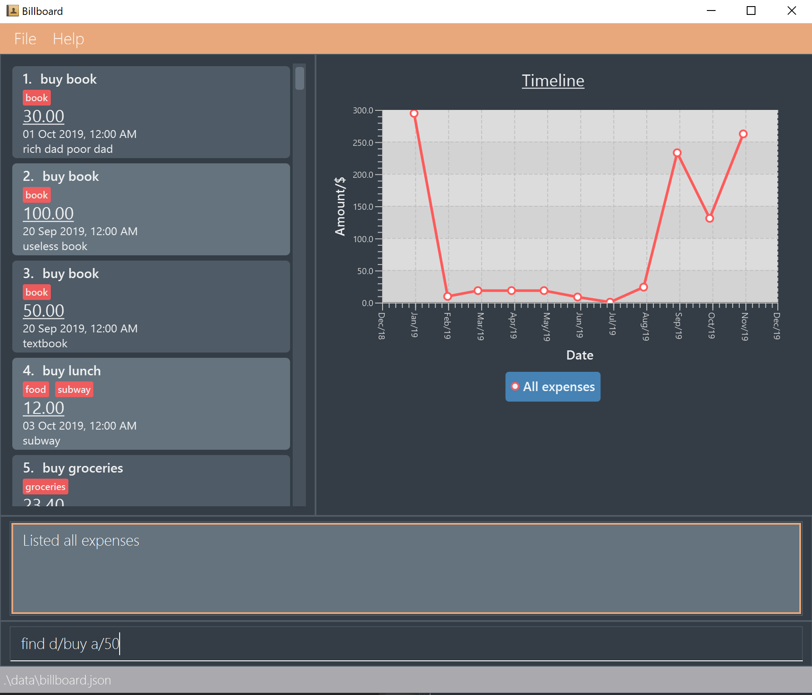
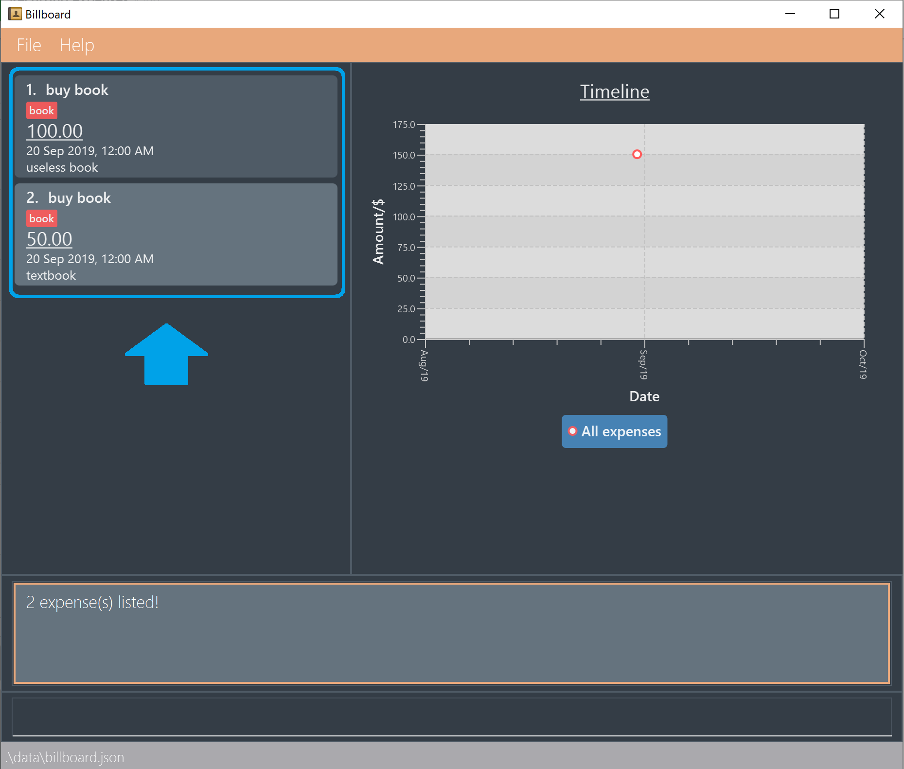
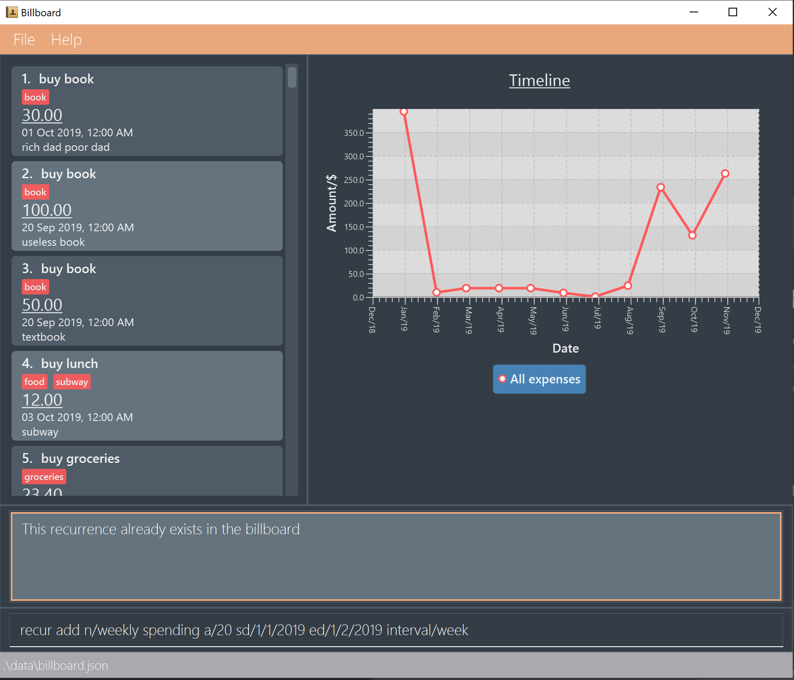
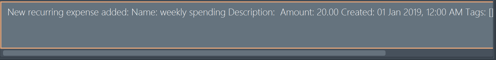
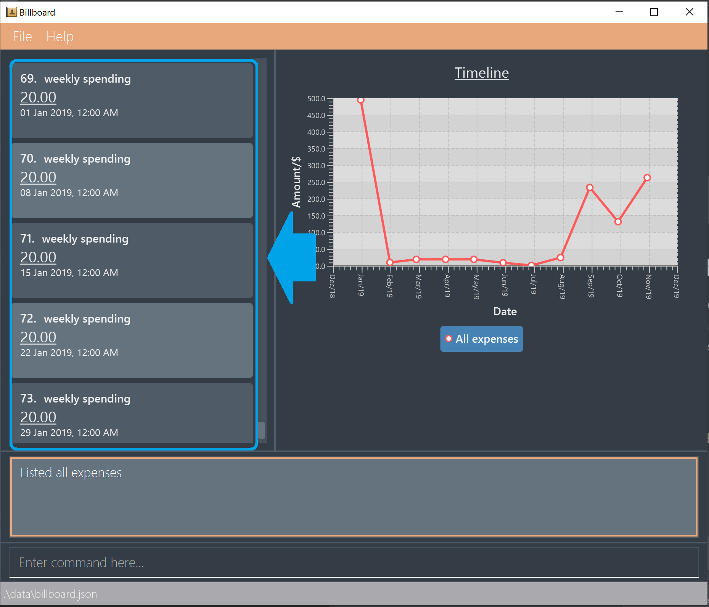
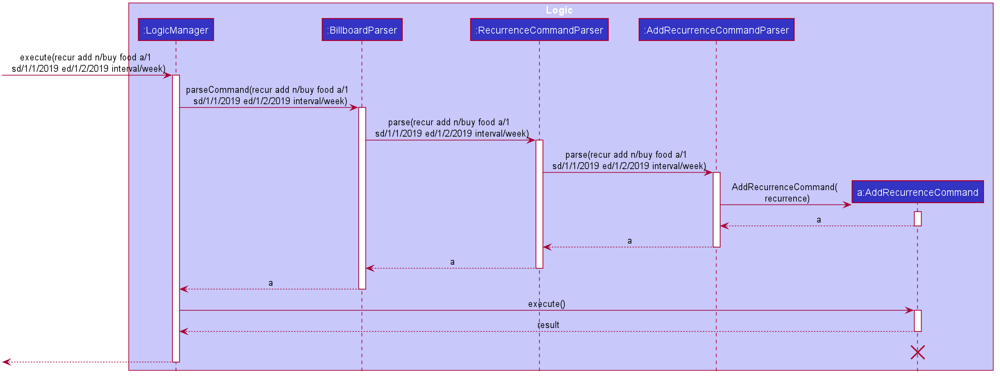

Introduction
Purpose of portfolio
The purpose of this portfolio is to document my personal contributions to the Software Engineering project named Billboard.
About the project
In the duration of the Software Engineering Module CS2103T, my team of 5 students is given the task to either add value to the base project AddressBook, or morph the base project into a product of our own. We decided to go with the later and transformed AddressBook into a financial tracker software, Billboard, that helps one manage their daily expenses.
This new application is targeted at students and enables them to record and manage their daily expenses. Our application support various features that enhance the users' experience, such as the ability to categorise, filter and archive expenses. Users are also able to undo and redo actions that they have made.
Billboard is designed to be a Command Line Interface (CLI) application. This means that all the interactions from the user to the application is done through entering commands. However, Billboard also provides a Graphics User Interface (GUI), which provides the user with more visually appealing feedback.
The role that I played in the project was to design and implement the code for the find and recur feature.
Additionally, I was tasked to customise the project information and documentation pages to fit our project. My contributions are documented in more details in the following sections.
Summary of contributions
This section summarises what I have contributed to Billboard. This comprises of technical, documentation or any other meaningful contributions.
-
Major enhancement: I added all filter related functions except for filtering by tag with is implemented by the person who implemented tag function.
-
What it does: My enhancement allows the user to filter expenses by a mix of parameters such as by keywords, by upper and lower amount limit and by starting and ended date limits.
-
Justification: As users start to use Billboard for a while, their expenses start to increase and it gets more difficult for the user to look for specific entries. Having the ability to filter in various ways for the expenses that they are looking for help users to manage their expenses more effectively. Furthermore, it allows users to find trends in their past expenses, for example find the times that they spend more by filtering for expenses that are above a certain amount.
-
Highlights: This enhancement was challenging in the sense that it requires knowledge of how to filter using multiple optional parameters and ensure that any combination of parameters can be used to filter through the list of expenses.
-
-
Major enhancement: I added all recur related functions.
-
What it does: My enhancement allows the user to add and show recurring expenses to Billboard.
-
Justification: There exists expenses that are incurred on a periodic basis, such as paying of school fees, phone bills, utility bills, monthly passes for transportation etc. Being able to add multiple expenses with a single line of command greatly improves the efficiency of users who inputs periodic or duplicated expenses.
-
Highlights: In order to implement this feature a new data type called Recurrence needs to be added to the Billboard model. A lot of care is taken to ensure that this new addition will integrate well with other features such and undo/redo feature and archive.
-
-
Code contributed: [Functional code tracked with RepoSense]
-
Other contributions:
-
Project management:
-
I assisted with the release of V1.2 and V1.3
-
-
Enhancements to existing features:
-
I designed and implemented the default Billboard color scheme, called the "Inertia theme", to give the application its unique aesthetic identity and make it more user-friendly. Additionally, I added an extra Pastel color theme for users who prefer a brighter interface (Pull request #104)
-
-
Documentation:
-
I wrote the team’s About Us document, which consisted of information about our team members: #7
-
I added our project’s user stories, use cases and non functional requirements to the Developer Guide: #19
-
I renamed all instances of placeholder name "Financial Tracker" to "Billboard" in User Guide, Developer Guide and Readme documents: #26
-
-
Community:
-
Pull Requests of team members reviewed and approved by me: #2 (with constructive feedback), #69, #111,
-
Pull Requests of other teams to the module repository reviewed by me: #14 (with constructive feedback), #97 (with constructive feedback)
-
-
Contributions to the User Guide
Given below is an excerpt from the Billboard User Guide detailing instructions on how to use the new find and recur features that I added.
This excerpt reflects my ability to write documentation meant for students, the targeted user group of the application, in a clear and concise manner so that they will be able to easily
understand what each find and recur operation does and how to use them.
Finding expenses by attributes: find
This feature allows you to search for specific expenses through use of various parameters. You can find expense by keyword, upper and lower amount limits, as well as upper and lower date limits.
-
Find : find
Find expenses that satisfies conditions specified in the arguments.
Usage:find <d/KEYWORD< KEYWORD…>> <a/LOWER AMOUNT LIMIT> <al/UPPER AMOUNT LIMIT> <sd/START DATE> <ed/END DATE>
Example:
find d/lunch book a/2 al/20 sd/1/1/2019 ed/1/10/2019
Finds all expenses that contain the keyword ‘lunch’ or 'book' and amount between 2 and 20 dollars and date between 1 Jan 2019 to 1 Oct 2019 in any of its attributes.
1. Type infind d/buy a/50

2. Application will show you expenses that contain keywordbuyand are of amount50or above.

Managing recurring expenses recur
This feature allows you to add recurring expenses to Billboard. This feature is especially useful when you have expenses that are almost exactly the same except for the date that the expenses are created.
-
Add a new recurrence: recur add
Adds an recurrence to records.
Usage:recur add n/[NAME] d/<DESCRIPTION> a/[AMOUNT] sd/[START DATE] ed/[END DATE] interval/[INTERVAL]
Example:
recur add n/pay school fees d/yearly nus tuition fees a/8000 sd/1/8/2018 ed/1/8/2021 interval/yearly
Adds an recurring expense to record where the name is "pay school fees", description is “yearly nus tuition fees”, amount of payment is 8000, first payment is on 1 Auguest 2018, last payment is on 1 August 2021, payment interval is yearly.
1. Enter commandrecur add n/weekly spending a/20 sd/1/1/2019 ed/1/2/2019 interval/week

2. Application will show you the details of the recurrence that you have added

3. Enter the list command to see the added expenses.

-
List all recurrence: recur list
Lists all the recurrence in the record list.
Usage:recur list
Example:
recur list
Displays below recurences (for example) in the GUI:-
pay school fees / yearly tuition fee / amount: $8000 / start date: 1 Aug 2018 / end date: 1 Aug 2021 / Interval: Yearly
-
pay for phone subscription / Starhub XL Plan / amount: $150 / start date: 1 Aug 2018 / end date: 1 Jul 2020 / Interval: Monthly
-
Contributions to the Developer Guide
Given below are my documentation in the Developer Guide. They reflect my ability to write technical documentation and showcase the technical depth of my contributions to the project.
Recurring Expenses
Proposed Implementation
The recurring expenses feature supports the adding of recurring expenses into Billboard. Recurring expenses have a start date and a end date. The date of the first expense will be the start date, and subsequent expenses will defer from the previous expenses by a date interval specified by the user. The recurring expense feature supports the following operations:
-
Listing all the recurrences
-
Adding a new recurrence which will add recurring expenses to the list of expenses
-
Editing an existing recurrence [Coming in V2.0]
-
Deleting an existing recurrence [Coming in V2.0]
These actions are facilitated by the Recurrence and RecurrenceList classes:
RecurrenceList is used in ModelManager to manage all recurrences. Its respective operations are called to access and manipulate recurrence expenses when an recurrence command is entered.
Such operations include:
-
RecurrenceList#add(Recurrence)- Adds the given recurrence to the current list of recurrence objects. -
RecurrenceList#contains(Recurrence)- Checks if the specified recurrence by the given recurrence name exists. -
RecurrenceList#remove(Recurrence)- Deletes the given recurrence from the current list of recurrence objects. (Assumes given recurrence already exists) -
RecurrenceList#setRecurrence(Recurrence, Recurrence)- Set existing recurrence to new recurrence -
RecurrenceList#setRecurrences(RecurrenceList)- Set the list of recurrences to the given recurrence list -
RecurrenceList#setRecurrences(List<Recurrence>)- Set the list of recurrences to the given recurrence list
These operations are exposed in the Model interface respectively as:
-
Model#addRecurrence(Recurrence) -
Model#hasRecurrence(String) -
Model#removeRecurrence(Recurrence) -
Model#removeRecurrence(int) -
Model#setRecurrences(RecurrenceList) -
Model#setRecurrences(List<Recurrence>) -
Model#getRecurrences()
Given below is an example usage scenario and how the recurrence mechanism behaves at each step.
Step 1.
The user launches the application. The Model is initialized with saved data. All expenses are loaded into FilteredList. No recurrence data is saved for now so model starts with an empty RecurrenceList
Step 2.
User enters the command recur add n/name d/description a/amount sd/startDate ed/endDate interval/interval to add recurring expenses that matches conditions set by user input. BillboardParser parses the command, creating a RecurringCommandParser.
The RecurringCommandParser then parses add n/name d/description a/amount sd/startDate ed/endDate interval/interval to create a AddRecurrenceCommandParser to parse all the variables.
The variables are then used to create the AddRecurrenceCommand.
The layered parsing process can be visualised below:

Step 3.
LogicManager executes the AddRecurrenceCommand. During execution, AddRecurrenceCommand calls Model#addRecurrence(Recurrence) and Model#addExpense(Expense)`on the new recurrence and expenses created.
`Model#incrementCount(Set<Tag>) is then called on the set of Tag. The expense are then updated and shown on the UI.